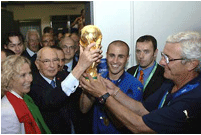

Футбол
 Футбол — самый популярный командный вид спорта в мире, целью в котором является забить мяч в ворота соперника большее число раз, чем это сделает команда соперника в установленное время. Мяч в ворота можно забивать ногами или любыми другими частями тела (кроме рук). История возникновения и развития футбола (кратко)Точной даты возникновения футбола не известно, но можно с уверенностью сказать, что история футбола насчитывает не одно столетие и затронула немало стран. Игры с мячом были популярны на всех континентах, об этом говорят повсеместные находки археологов. В Древнем Китае существовала игра, известная как «Цуцзюй», упоминания о которой были датированы вторым веком до нашей эры. По заявлению ФИФА в 2004 году, именно она считается наиболее древней из предшественников современного футбола.